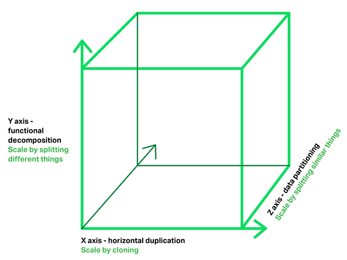
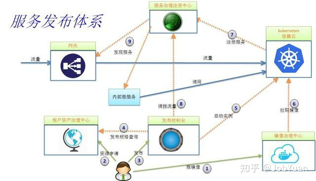

常用¶
Wikipedia:
Microservices is a software development technique
— a variant of the service-oriented architecture （SOA） structural style.
维基百科上，人们仍然是把微服务定义成了 SOA 的一个变种
2012 年，在波兰克拉科夫举行的 “33rd Degree Conference” 大会上，Thoughtworks 首席咨询师 James Lewis 做了题为 《Microservices - Java, the Unix Way》 的主题演讲:
单一服务职责、康威定律、自动扩展、领域驱动设计等原则
未提 SOA，反而号召大家，应该重拾 Unix 的设计哲学（As Well Behaved Unix Services）
微服务真正崛起是在 2014 年。相信我们大多数程序员，也是从 Martin Fowler 和 James Lewis 合写的文章 “Microservices: a definition of this new architectural term” 里面:
这篇文章虽然不是最早提出 “微服务” 这个概念的，但却是真正丰富的、广为人知的和可操作的微服务指南。
也就是说，这篇文章才是微服务的真正起源。
定义了现代微服务的概念：
微服务是一种通过多个小型服务的组合，来构建单个应用的架构风格，这些服务会围绕业务能力而非特定的技术标准来构建。
各个服务可以采用不同的编程语言、不同的数据存储技术、运行在不同的进程之中。
服务会采取轻量级的通讯机制和自动化的部署机制，来实现通讯与运维。
微服务的三维扩展模型¶

微服务的三维扩展模型¶
Chris Richardson 提出的微服务的三维扩展模型:
X 轴: 服务实例水平扩展，保证可靠性与性能
Y 轴: 功能的扩展，服务单一职责，功能独立
Z 轴: 数据分区，数据独立，可靠性保证
通信问题:
第一个维度是一对一还是一对多:
一对一：每个客户端请求有一个服务实例来响应。
一对多：每个客户端请求有多个服务实例来响应。
第二个维度是这些交互式同步还是异步:
同步模式：客户端请求需要服务端即时响应，甚至可能由于等待而阻塞。
异步模式：客户端请求不会阻塞进程，服务端的响应可以是非即时的。
一对一 一对多
同步 Request/Response --
异步 Notification Publish/suscribe
Request/async response Publish/async responses

服务发布体系¶
收集¶
基本哲理:
只做一件事，并把它做到极致
核心:
单一职责原则(Single Responsibility Principle, SRP)
微服务架构的6 个原则和特征:
1. 系统由两个及以上运行单元或组件组成。
这些组件将其自身功能以服务的形式展现出来。
每个组件服务于一个业务目标，各个组件之间是松祸合的。
组件之间按照预先定义的协议进行交互，协议包括消息队列、HTTP 请求/响应模型等
2. 系统应该是与编程语言无关的，
3. 系统的数据库应该是去中心化的。
理想情况下，每个微服务应该享有自己的数据库，该数据库仅供该服务自己使用
任何其他组件或者服务都不能提取或者修改该数据库中的数据
4. 系统中的每个组件都应该是内聚、独立且可以自行部署的。
任何一个组件在正常工作和部署的时候都不应该依赖其他组件或者资源。
为了实现快速上线，每个组件应该有自己的CI/CD流水线。
5. 系统应该有自动化测试。
微服务架构最值得称道的特征就是快
在构建、测试到上线的整个周期中，如果没有自动化测试，速度快就是一纸空谈。
6. 任何一个组件/服务的故障都应该是隔离的。
单个服务的故障不应该拖垮整个应用，也不应该影响其他组件和服务。
为了做到这一点，应该有一些故障回滚的机制。